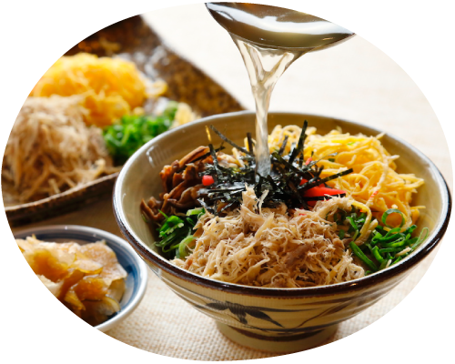
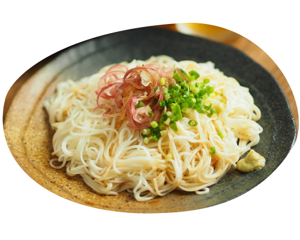
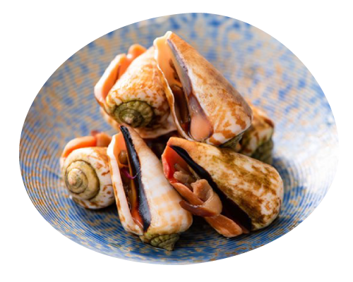

AMAMI FOODS
太陽の下で元気に育った島野菜、透き通った海の中で獲れた魚たちを使った、
奄美大島ならではの家庭料理をお出ししています。
素朴な奄美大島の郷土料理をお楽しみください。
定番の郷土料理

鶏飯（けいはん）
奄美大島といったらこれ！
熱々のご飯に、蒸した鳥のササミ、錦糸卵、甘辛く煮た千切りのしいたけ、パパイヤの漬け物のみじん切りなどを盛りつけて、
最後に鶏の旨みがたっぷり染み込んだだし汁をかけて食べる。
これが最高においしい！奄美に来たら、絶対食べたい１品です。
油ゾーメン（あぶらぞーめん）
いりこ出汁と油で、そうめん、豚肉、野菜を入れて炒めた奄美大島の家庭料理、油ゾーメン（油そうめん）。
暑い日のランチにあっさり、ペロッといけそうですね。沖縄のそうめんチャンプルーに似ています。


とびんにゃ（テラダ貝/チャンバラ貝）
奄美でのおつまみの代表格である珍味貝。
地元では「とびんにゃ」と呼ばれ、お酒の席ではなくてはならない一品です。
貝の隙間からギザギザのノコギリ型のツメをだし、捕まえた時にそのツメをブンブン振り回す動きが刀を振り回す様に似ていたことから一般的にはチャンバラ貝と呼ばれています。
奄美では、シンプルに塩ゆでをし、ツメをつかんで身を出す、あるいは、爪楊枝で身を取り出して食べるのが一般的です。
奄美のおいしいフルーツ
パッションフルーツ
たんかん
ドラゴンフルーツ
奄美大島でしか造られない黒糖焼酎
黒糖焼酎
奄美大島だけ、製造が許可されている本格焼酎。
くせがなくカロリーゼロで、とっても飲みやすい。
沢山種類があるので、色々試して飲みたいお酒です。